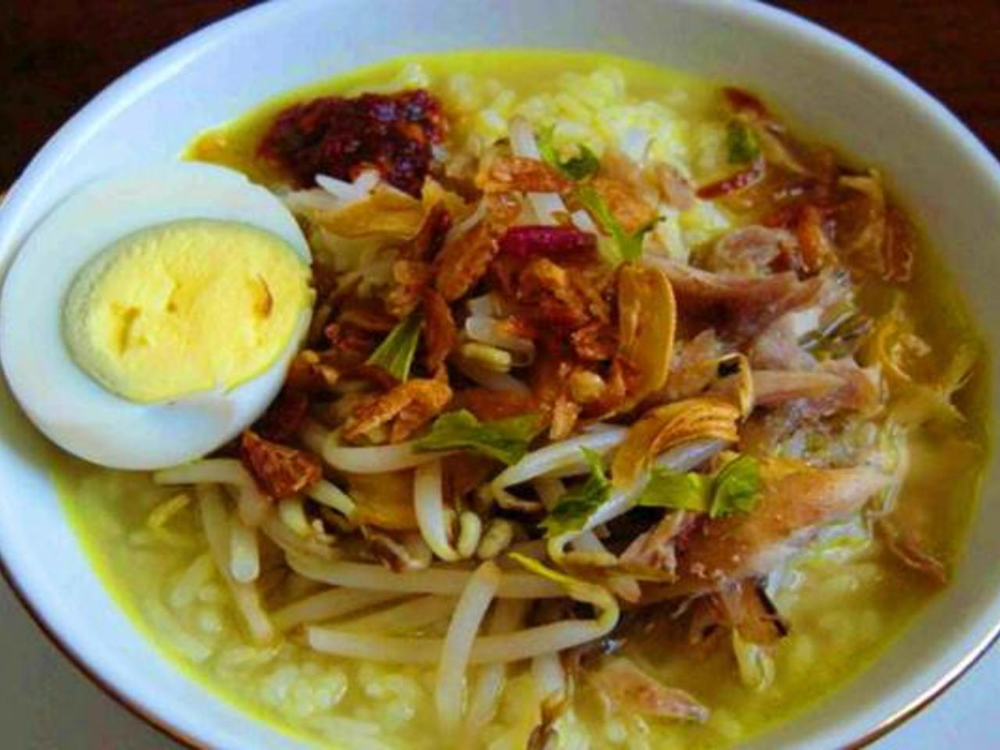
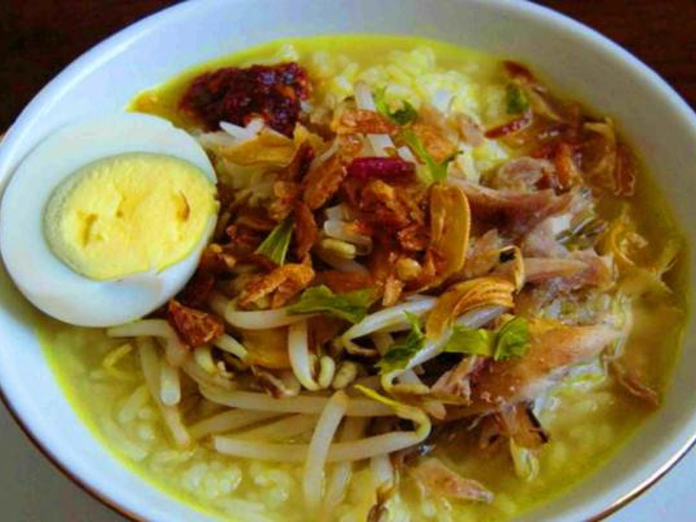

Soto Lamongan
Local Food in Lamongan
Soto Lamongan is a unique chicken soup dish from Lamongan, East Java. Soto Lamongan is very unique and different from other soup, both in terms of presentation and taste. Soto Lamongan is one of the traditional foods from Lamongan which is very famous for its delicacy. Not only in the regency itself, but also a very popular dish in Indonesia.
This Soto Lamongan is a little different from other soto. One of the characteristics of Soto Lamongan lies in the shrimp cracker powder which is often called Poya. If the Poya powder is mixed with the sauce it will produce a distinctive savory taste in this Soto Lamongan. besides it tastes good, the aroma of Soto Lamongan is also very appetizing.
 
